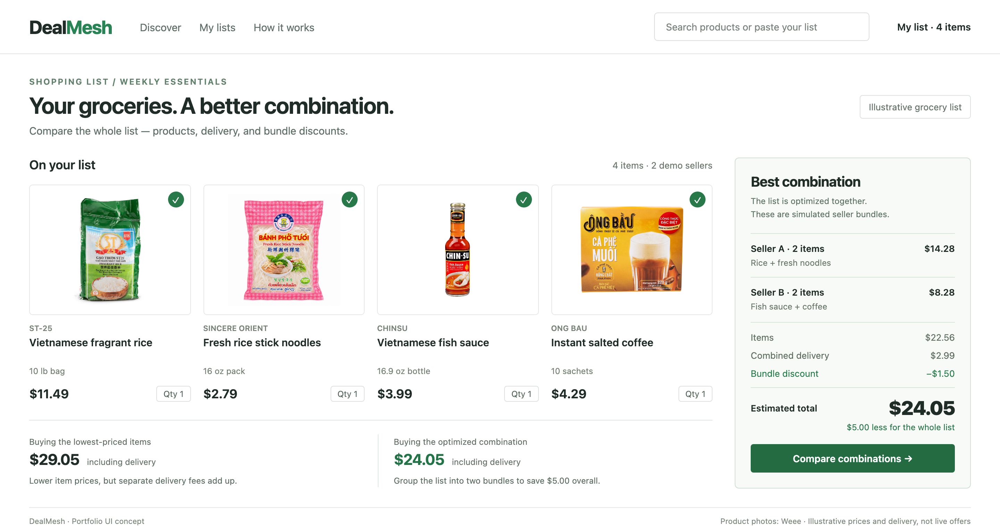

DealMesh
Finding the cheapest item does not always make the cheapest shopping list. DealMesh compares products, sellers, shipping, and bundle discounts to choose a combination for the whole list.
The optimizer explains each choice and flags unknown shipping costs. Built-in demo marketplaces let the workflow run without marketplace credentials.
Java
Spring Boot
React
TypeScript
Vite
Tailwind CSS
PostgreSQL
Redis